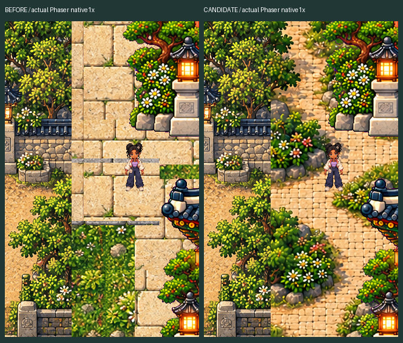
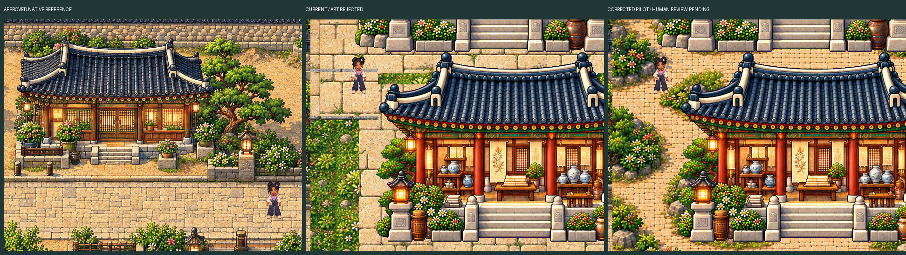
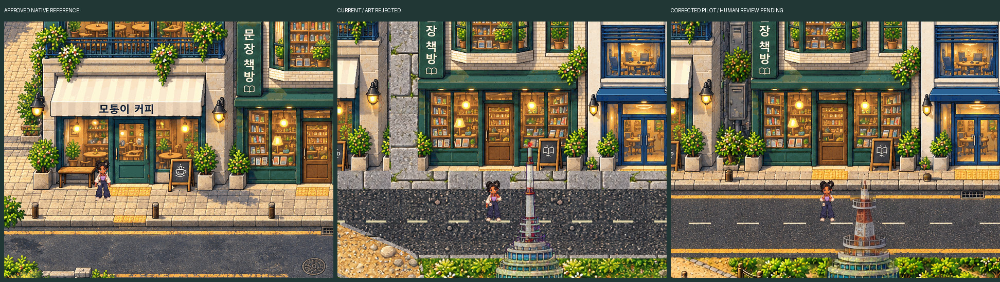
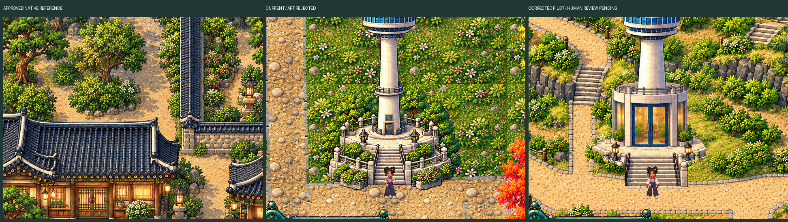
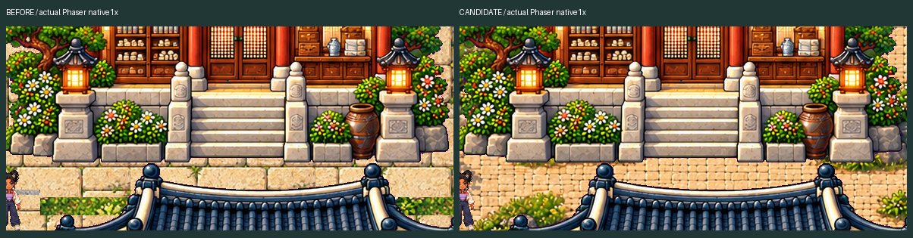
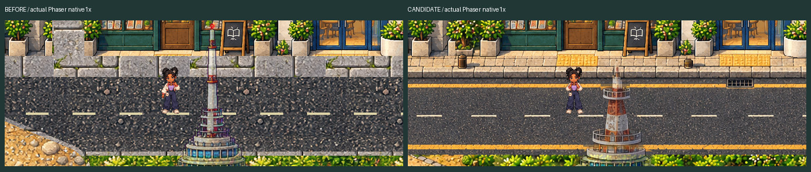
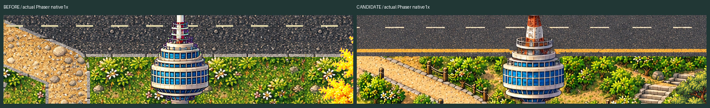
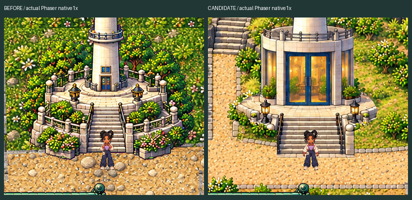

Protected historical boundary

Human artistic approval pending. No full-world propagation. The rejected prototype and approved source assets are preserved. These previews do not certify complete regions, physical devices or hardware performance.
PLAY candidate · QA / limits · Art Bible · Ten-region audit · Technical QA JSON
JPEG previews are under1MB. Click native PNG links and inspect at100% for pixel fidelity. Namsan reference is approved Korean garden material/scale, not a previously approved hill design.
One shared style system · approved reference / rejected current / corrected candidate. All columns of the native board use unscaled source crops.

BEFORE native1:1 · CANDIDATE native1:1 with Juni · Native comparison board · Approved native reference crop · Moving Follow-camera native capture
Real WASD gameplay. MP4 is a768×600/12fps review copy; original1280×1000 WebM remains in the repository. No teleport or collision override.
One shared style system · approved reference / rejected current / corrected candidate. All columns of the native board use unscaled source crops.

BEFORE native1:1 · CANDIDATE native1:1 with Juni · Native comparison board · Approved native reference crop · Moving Follow-camera native capture
Real WASD gameplay. MP4 is a768×600/12fps review copy; original1280×1000 WebM remains in the repository. No teleport or collision override.
One shared style system · approved reference / rejected current / corrected candidate. All columns of the native board use unscaled source crops.

BEFORE native1:1 · CANDIDATE native1:1 with Juni · Native comparison board · Approved native reference crop · Moving Follow-camera native capture
Real WASD gameplay. MP4 is a768×600/12fps review copy; original1280×1000 WebM remains in the repository. No teleport or collision override.
Actual native behind-building review spawns: North · South · Namsan. Static ownership checks, not movement claims.





Before Phaser1:1 · Candidate Phaser1:1. Protected station region has0 differing pixels excluding Juni animation. Source hashes and station8px collision strip unchanged. No transfer PASS claimed.
Palace continuation trials failed internal review and were not installed. Upper compound, remaining-world seams, attraction/station projections, secondary terrace ownership and Bakery allocation remain open. Physical Android/iPhone and hardware WebGL are NOT TESTED. These art pilots await one unified human approval before the consolidated production batch.